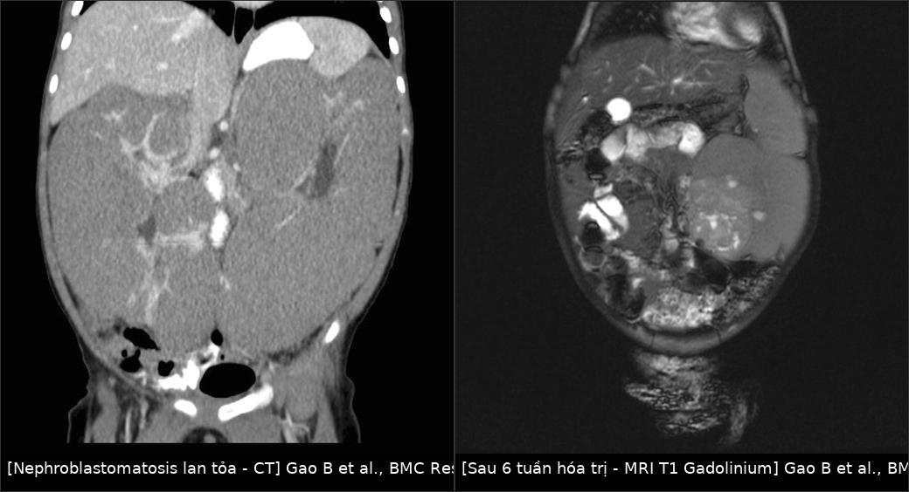
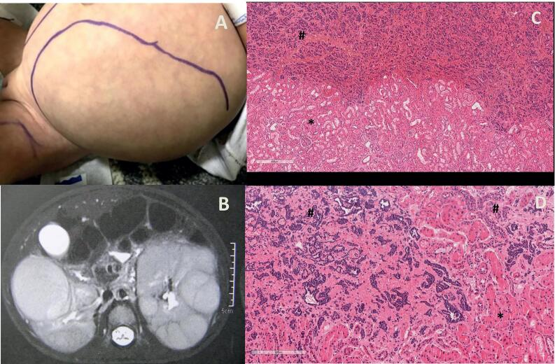
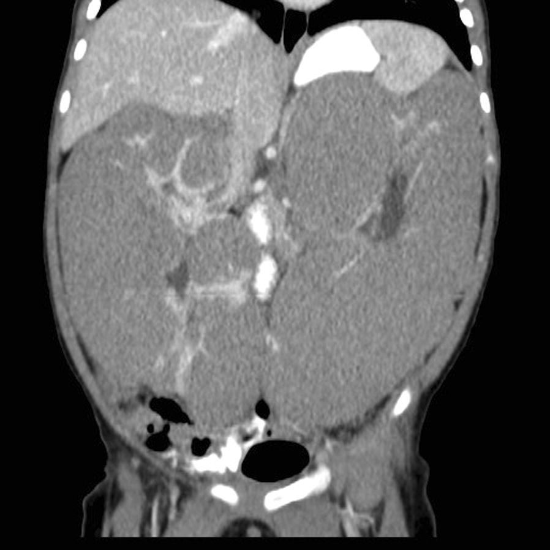
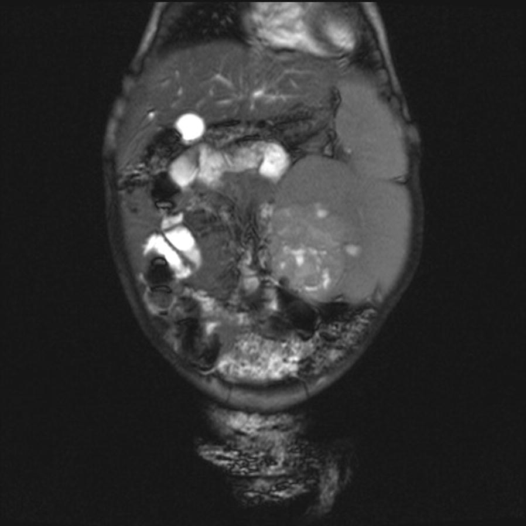
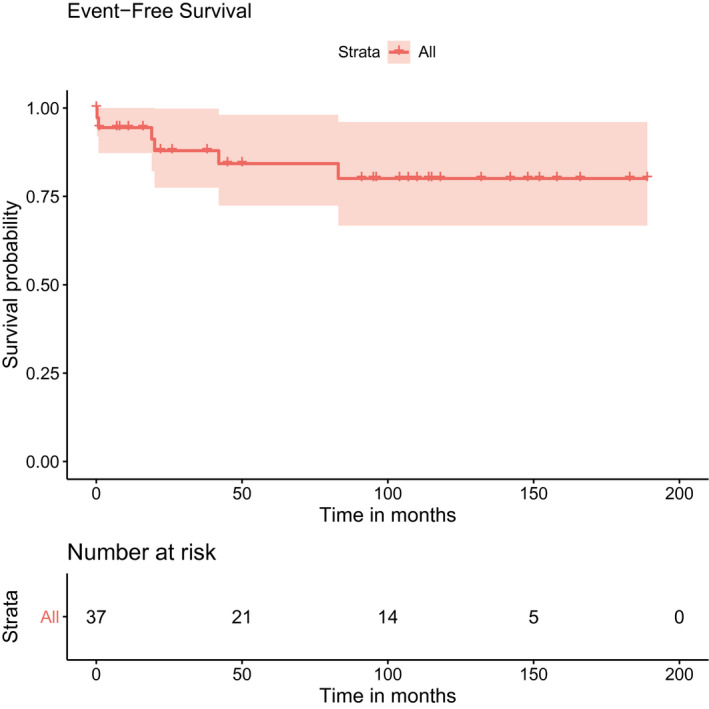

648 — Hội chứng dễ mắc u nguyên bào thận: BWS, WAGR, Denys–Drash & lịch tầm soát siêu âm / Wilms tumor predisposition syndromes: surveillance and nephroblastomatosis
Tags: pattern:u-than-hai-ben pattern:nephroblastomatosis pattern:o-nguyen-bao-than vung:than vung:o-bung-nhi score:SIOP protocol:US-tam-soat-3-thang incidentaloma:o-nguyen-bao-than
Mức chắc chắn (certainty): tổng hợp y văn (literature synthesis) — đồng thuận BWS 2018 + cập nhật Ý 2025 (Russo S et al., Ital J Pediatr 2025, PMC12542140), đoàn hệ SIOP WAGR 30 năm (Hol JA et al., Cancer 2021, PMC7894534), đoàn hệ Denys–Drash Pháp (Glénisson M et al., Kidney Int Rep 2025, PMC12034853), 2.927 ca SIOP/GPOH (Welter N et al., Cancers 2021, PMC8507684) + ca nguyên văn nephroblastomatosis (Gao B et al., BMC Res Notes 2018, PMC6006723; de Jesus LE et al., Int Braz J Urol 2022, PMC8691244).
1. Tổng quan — vì sao phải nhớ "hội chứng" trước khi gọi "Wilms đơn thuần"
- 9–17% u nguyên bào thận (Wilms tumor — WT) có hội chứng dễ mắc (cancer predisposition syndrome — CPS) hoặc dị tật bẩm sinh. Nhóm này khác WT lẻ ở 4 điểm quyết định xử trí:
- Trẻ hơn: tuổi trung vị 24,5 tháng so với 39,0 tháng.
- U nhỏ hơn: 349,4 mL so với 487,5 mL.
- Ít di căn hơn: 8,2% so với 18%.
- Nhiều nephroblastomatosis hơn: 12,9% so với 1,9% (Welter N et al., PMC8507684).
- TẠI SAO có "tiền ung thư" trên hình ảnh: WT phát sinh từ ổ nguyên bào thận (nephrogenic rests) — tế bào thận phôi tồn tại sau tuần thai 36. Ổ đơn lẻ gặp tình cờ ~1% nhũ nhi; nhiều ổ/lan tỏa = nephroblastomatosis. Ổ nguyên bào thận T2 tăng nhẹ, ngấm thuốc kém hơn nhu mô, bờ rõ; khi tăng sản lan tỏa (diffuse hyperplastic perilobar nephroblastomatosis — DHPLNB) hai thận to đều, nhiều nốt vỏ, không có khối thống trị.
- TẠI SAO quét mỗi 3 tháng: thời gian nhân đôi thể tích của WT 11–40 ngày; các ca "mọc giữa hai lần quét" được báo cáo ở 4–6 tháng. Khoảng 3 tháng là dung hòa giữa bắt được u còn nhỏ và giảm bức xạ/gây lo lắng.
- Số liệu định lượng theo hội chứng:
- BWS (Beckwith–Wiedemann, 11p15.5): nguy cơ WT ~4,1%, tuổi trung vị 24 tháng; 31% WT hai bên trong chuỗi SIOP. Tầm soát đến 7 tuổi phát hiện ~95% ca WT. Cơ chế: IC1-GoM (tăng methyl hóa) và UPD(11)pat nguy cơ cao hơn IC2-LoM (< 5%).
- WAGR (11p13, mất đoạn WT1 + PAX6): nguy cơ WT 45–60%, tuổi trung vị 22 tháng (6–44 tháng), 37,5% hai bên, 78,9% có ổ nguyên bào thận; không có di căn/không anaplasia trong chuỗi 43 ca; EFS 5 năm 84,3%, OS 91,2%. U đối bên muộn xuất hiện tới 7 năm sau chẩn đoán → phải theo dõi dài.
- Denys–Drash (WT1 exon 8/9): WT 29%, tuổi trung vị 1,2 tuổi (0,5–2,2); 29% hai bên; đột biến exon 8 → bệnh thận khởi phát sớm hơn, suy thận sớm hơn và tử vong cao hơn exon 9. Thể mô học hay stromal; đáp ứng hóa trị kém (thể tích tăng 0,4% trong chuỗi SIOP).
- BWS đáp ứng hóa trị tốt hơn: giảm 86,9% thể tích — nhưng không dùng đáp ứng để chẩn đoán hội chứng.
- Điều trị khác WT lẻ ở đâu: ưu tiên phẫu thuật bảo tồn thận (nephron-sparing surgery — NSS) vì nguy cơ u hai bên/đối bên muộn và vì nhiều trẻ đã có bệnh thận nền (Denys–Drash); hóa trị trước mổ để thu nhỏ u; tránh xạ trị khi có thể; theo dõi huyết áp, creatinine/eGFR suốt đời.

Trái — CT bụng có cản quang: hai thận to lan tỏa, đồng nhất, các ổ nguyên bào thận giảm đậm độ ở vỏ/perinephric (mũi tên), không có khối thống trị. Phải — MRI T1 sau gadolinium, sau 6 tuần hóa trị: ổ tăng sản không đồng nhất 6 × 6,3 cm ở thận trái, nhiều nang nhỏ, cùng nhân ngấm mạnh 1 cm — đây là WT phát triển trên nền nephroblastomatosis. Gao B et al., BMC Res Notes 2018 (PMC6006723, Fig. 1–2), CC BY 4.0; ảnh ghép letterbox, không crop.2. Mẫu hình + chẩn đoán phân biệt của "hai thận to/nhiều nốt" ở nhũ nhi (Gamut)
- Nephroblastomatosis (DHPLNB): hai thận to đều, nhiều nốt vỏ < 1–2 cm, không có khối thống trị, T2 tăng nhẹ, ngấm kém; có thể teo một phần sau hóa trị.
- WT hai bên (giai đoạn V): thường một khối lớn chiếm ưu thế mỗi bên + nốt vệ tinh; không đồng nhất, ngấm mạnh, có thể có huyết khối tĩnh mạch chủ dưới.
- Bệnh thận đa nang lặn (ARPKD): hai thận to, tăng âm, mất phân biệt vỏ–tủy, vi nang, kèm gan xơ hóa; không có nốt đặc ngấm thuốc.
- Ứ nước thận hai bên: bể thận giãn, nhu mô mỏng; hỏi van niệu đạo sau ở bé trai (bài 635).
- Huyết khối tĩnh mạch thận sơ sinh: thận to, phù nề, không có tín hiệu Doppler, kèm tiểu máu/giảm tiểu cầu.
- Thâm nhiễm bạch cầu/lymphoma: hai thận to đồng nhất, có thể kèm hạch; bối cảnh huyết học.
- Neuroblastoma hai bên: khối ngoài thận, vôi hóa thô, bọc mạch (bài 630).
- Mẹo nhớ "BIG KIDNEYS": Bilateral Wilms, Infiltration (lymphoma/leukemia), Genetic (ARPKD), Kidney vein thrombosis, Infection (nephritis), Dysplasia, Nephroblastomatosis, Edema/systemic, Young age (physiologic), Syndromes (BWS/WAGR/DDS).
3. Bảng so sánh phân biệt (ma trận đối chiếu)
| Hội chứng / thực thể | Gen–cơ chế | Nguy cơ WT | Tuổi trung vị | Hai bên | Tầm soát | U khác cần nhớ |
|---|---|---|---|---|---|---|
| BWS | 11p15.5: IC1-GoM, IC2-LoM, UPD(11)pat, CDKN1C | ~4,1% (cao hơn ở IC1-GoM/UPD) | 24 tháng | 31% | US bụng mỗi 3 tháng đến 7 tuổi; AFP mỗi 3 tháng đến 36 tháng | Hepatoblastoma, neuroblastoma (CDKN1C), adrenocortical |
| WAGR | 11p13: mất đoạn WT1 + PAX6 | 45–60% | 22 tháng (6–44) | 37,5% | US mỗi 3 tháng đến 5–7 tuổi (ưu tiên 7 vì u đối bên muộn tới 7 năm) | Gonadoblastoma (khi có DSD) |
| Denys–Drash | WT1 exon 8/9 (missense) | 29% (chuỗi Pháp 2025) | 1,2 tuổi | 29% | US mỗi 3 tháng đến 5–7 tuổi + HA, creatinine, protein niệu | Bệnh thận màng trong (DMS) → suy thận; gonadoblastoma |
| Frasier | WT1 intron 9 (splice) | 5–20% | Trẻ lớn/thiếu niên | Ít gặp | US mỗi 3 tháng đến 5–7 tuổi; siêu âm khung chậu | Gonadoblastoma (tới 60%), DSD 46,XY |
| Phì đại nửa người đơn thuần | Chưa xác định | < 5% | Nhũ nhi–trẻ nhỏ | Thấp | US mỗi 3 tháng đến 5 tuổi | Adrenocortical carcinoma (hiếm) |
| Simpson–Golabi–Behmel | GPC3 (Xq26) | 5–20% | Nhũ nhi | Có thể | US mỗi 3 tháng đến 7 tuổi; AFP đến 4 tuổi | Hepatoblastoma, u mô bào |
| Nephroblastomatosis (DHPLNB) | Ổ nguyên bào thận tồn tại | Tiến triển WT ~35% (1/3–1/2) | < 1 tuổi | Lan tỏa hai bên | Theo dõi sát sau hóa trị; US/MRI 3 tháng | WT đồng thời/đối bên |
- Phân biệt cốt lõi trên hình ảnh: nephroblastomatosis = nhiều nốt nhỏ, không khối thống trị, ngấm kém; WT = khối thống trị, không đồng nhất, ngấm mạnh, có thể xâm lấn mạch. Khi có nốt > 1 cm ngấm mạnh hoặc tăng kích thước, phải nghĩ WT.

(A) Bụng chướng ở bé gái 18 tháng; (B) MRI T2 axial: hai thận to, nhiều nốt tăng tín hiệu T2 ở vỏ — hình ảnh nephroblastomatosis; (C/D) mô học: vùng tăng sản nguyên bào thận (#) bên cạnh nhu mô thận. de Jesus LE et al., Int Braz J Urol 2022 (PMC8691244, Fig. 2), CC BY 4.0.4. Protocol tầm soát + sơ đồ quyết định
- Ai cần tầm soát / xét nghiệm di truyền:
- Aniridia (đặc biệt không có tiền sử gia đình) → tìm mất đoạn 11p13/WAGR.
- Dị tật sinh dục – tiết niệu, DSD 46,XY, tinh hoàn ẩn hai bên.
- Phì đại nửa người, macroglossia, omphalocele, tai có rãnh/lỗ, phì đại tạng.
- WT hai bên, nephroblastomatosis, WT ở trẻ < 1 tuổi, tiền sử gia đình.
- Lịch tầm soát (US bụng, cả hai thận, đo chiều dài + tìm nốt vỏ):
- BWS: mỗi 3 tháng đến 7 tuổi (đồng thuận 2018 cho IC1-GoM/UPD; cập nhật Ý 2025 theo hướng bao phủ rộng hơn, không dựa vào mức độ phenotype). AFP mỗi 3 tháng đến 36 tháng để soát hepatoblastoma.
- WAGR: mỗi 3 tháng đến 5–7 tuổi; nhiều trung tâm chọn 7 tuổi vì u đối bên có thể xuất hiện 7 năm sau chẩn đoán.
- Denys–Drash: mỗi 3 tháng đến 5–7 tuổi + huyết áp, creatinine/eGFR, protein niệu mỗi lần khám.
- Phì đại nửa người: đến 5 tuổi; SGBS: đến 7 tuổi + AFP đến 4 tuổi.
- Kỹ thuật siêu âm: đo chiều dài thận và so với tuổi; ghi rõ số nốt, vị trí, kích thước, có ngấm/Doppler; chụp cả hai thận và bàng quang khi có triệu chứng tiểu.
- Khi thấy nốt mới: MRI bụng có cản quang (không dùng CT thường quy vì bức xạ). Không sinh thiết qua da — nguy cơ gieo mầm/upstaging, và mô bệnh nhỏ không phân biệt được rest với WT.
- Điều trị: hóa trị trước mổ (actinomycin D + vincristine) để thu nhỏ; NSS (cắt bán phần/bóc u) khi còn khả thi; cắt thận chỉ khi không giữ được nhu mô. Không có chỉ định cắt thận dự phòng thường quy — ngoại lệ cá biệt (thận mất chức năng, tăng huyết áp khó kiểm soát, lúc ghép thận ở DDS) phải do hội đồng đa chuyên khoa quyết định.
- Theo dõi sau điều trị: US/MRI theo lịch, HA + chức năng thận, tầm soát u khác (AFP, siêu âm khung chậu khi có DSD), tư vấn di truyền cho gia đình.
flowchart TD
A["Trẻ có dấu hiệu nghi hội chứng"] --> B["Di truyền: gen/epigenotype + tư vấn"]
B --> C{"Hội chứng nào?"}
C -->|"BWS"| D["US bụng + AFP mỗi 3 tháng; US đến 7 tuổi, AFP đến 36 tháng"]
C -->|"WAGR / Denys-Drash"| E["US bụng mỗi 3 tháng đến 5-7 tuổi + HA, creatinine"]
C -->|"Phì đại nửa người / SGBS"| F["US mỗi 3 tháng đến 5-7 tuổi; SGBS thêm AFP đến 4 tuổi"]
D --> G{"Nốt đặc mới / nốt to lên?"}
E --> G
F --> G
G -->|"Không"| H["Tiếp tục lịch; giáo dục gia đình"]
G -->|"Có"| I["MRI bụng có cản quang: hai thận + mạch"]
I --> J{"Nốt nhỏ, ngấm kém, không khối thống trị?"}
J -->|"Có"| K["Nghĩ rest/nephroblastomatosis: theo dõi, KHÔNG sinh thiết"]
J -->|"Không"| L["Nghĩ Wilms: hóa trị trước mổ + NSS nếu được"]
L --> M["Mô học + phân giai đoạn; theo dõi thận còn lại suốt đời"]
5. Biến thể bình thường & cạm bẫy
- Thận to sinh lý ở nhũ nhi: thận trái thường lớn hơn phải; đo chiều dài theo tuổi và so với chiều cao cơ thể, đừng chỉ nhìn "to".
- Trụ thận/medullary pyramids giảm âm ở trẻ nhỏ dễ bị đọc là nang/nốt — đối chiếu MRI nếu không chắc.
- Nephroblastomatosis không phải WT: không sinh thiết, không cắt thận ngay; nhưng không được bỏ theo dõi vì ~35% tiến triển WT.
- "U biến mất sau hóa trị": rest có thể teo nhỏ; đừng gọi là đáp ứng hoàn toàn nếu còn nốt — có thể còn WT sống.
- BWS thể nhẹ: không có macroglossia/omphalocele vẫn có thể có IC2-LoM/IC1-GoM; WT có thể là biểu hiện đầu tiên — hỏi kỹ tai, rốn, phì đại nửa người.
- WAGR dễ bỏ sót aniridia nhẹ hoặc chỉ có glaucoma bẩm sinh; khám mắt + xét nghiệm gen.
- Denys–Drash: bệnh thận có thể tiến triển trước cả WT; tránh thuốc độc thận, theo dõi eGFR, chuẩn bị ghép thận.
- Kết thúc tầm soát ở 7 tuổi không tuyệt đối: u đối bên muộn ở WAGR tới 7 năm sau chẩn đoán → cá thể hóa, nhất là khi còn thận bệnh lý.
- Nguy cơ quá chẩn đoán: nhiều nốt nhỏ ở DHPLNB có thể bị đọc là "WT đa ổ" → cắt thận quá mức; cần MRI + hội đồng.
6. Tự lượng giá — Blind Quiz
Ca 1 — Bé gái 18 tháng, bụng chướng, tăng huyết áp. Nhìn ảnh, mô tả trước:
- Gợi ý: hai thận to, không sốt, chức năng thận còn tốt.
- Hỏi: dấu hiệu chính? chẩn đoán? vì sao không cắt thận ngay?
Bấm để hiện đáp án (findings + chẩn đoán)
- Hai thận to lan tỏa, nhiều nốt vỏ tăng tín hiệu T2, không có khối thống trị → nephroblastomatosis (DHPLNB), chưa chắc WT.
- Không cắt thận ngay vì tổn thương hai bên/lan tỏa, có thể teo sau hóa trị, và cắt thận sẽ đẩy trẻ vào suy thận; ưu tiên hóa trị actinomycin + vincristine rồi đánh giá lại bằng MRI.
- Cạm bẫy: nốt 19 mm xuất hiện sau đó mới là WT — phải theo dõi liên tục, không kết luận một lần.
- Nguồn ca: de Jesus LE et al., Int Braz J Urol 2022 (PMC8691244, Fig. 2), CC BY 4.0.
Ca 2 — Bé gái 9 tháng, bụng to 2 tháng. CT lúc chẩn đoán, rồi MRI sau 6 tuần hóa trị:

- Hỏi: CT cho thấy gì? vì sao chọn hóa trị trước?
Bấm để hiện đáp án
- Hai thận to đồng nhất, thận phải 13,1 cm, thận trái 15 cm (bình thường ~6 cm), mất phân biệt vỏ–tủy, nhiều ổ giảm đậm độ perinephric = nephrogenic rests → DHPLNB.
- Hóa trị trước để thu nhỏ tổn thương, bảo tồn nhu mô; sau đó đánh giá lại bằng MRI để tìm WT thống trị.
- Nguồn ca: Gao B et al., BMC Res Notes 2018 (PMC6006723, Fig. 1), CC BY 4.0.
Ca 2b — Cùng bệnh nhân, MRI T1 sau gadolinium sau 6 tuần hóa trị:

- Hỏi: tổn thương nào đáng ngờ WT? xử trí?
Bấm để hiện đáp án
- Ổ 6 × 6,3 cm không đồng nhất, nhiều nang nhỏ, kèm nhân ngấm mạnh 1 cm ở thận trái → WT phát triển trên nền DHPLNB.
- Xử trí: cắt bán phần thận trái (NSS) — mô bệnh xác nhận WT không anaplasia, bờ cắt dương → hóa trị tiếp; theo dõi 3,5 năm, hồi phục hoàn toàn.
- Bài học: hóa trị làm rest teo nhưng WT còn ngấm — đừng đọc "đáp ứng hoàn toàn".
- Nguồn: Gao B et al., BMC Res Notes 2018 (PMC6006723, Fig. 2), CC BY 4.0.
Ca 3 — Đọc biểu đồ WAGR: tầm soát đến khi nào?

- Hỏi: EFS 5 năm khoảng bao nhiêu? biến cố chính là gì? vì sao phải theo dõi thận đối bên 7 năm?
Bấm để hiện đáp án
- EFS 5 năm 84,3%, OS 91,2%; không có di căn/anaplasia, nhưng 37,5% hai bên và u đối bên muộn tới 7 năm; 3 ca tử vong do độc tính điều trị (2 hepatotoxicity, 1 tắc ruột).
- Vì vậy siêu âm mỗi 3 tháng và kéo dài theo dõi đến 7 tuổi (hoặc lâu hơn nếu còn thận bệnh lý), đồng thời giám sát độc tính.
- Nguồn: Hol JA et al., Cancer 2021 (PMC7894534, Fig. 2), CC BY-NC 4.0 (nguyên bản).
Bài liên quan chéo
- 600 – Tổng quan Nhi khoa
- 630 – U bụng nhi: neuroblastoma vs Wilms
- 639 – Khối thận đặc ở trẻ: Wilms vs CMN vs RCC
- 647 – CMN thể tế bào: theo dõi sau cắt thận & tái phát
- 156 – Hội chứng di truyền u thận ở người lớn
- 635 – Dị tật tiết niệu nhi: ứ nước, VUR, van niệu đạo sau
Ảnh
648_nephroblastomatosis_CT_PMC6006723-Fig1-CCBY.jpg,648_nephroblastomatosis_MRI-T1-Gd_PMC6006723-Fig2-CCBY.jpg— CC BY 4.0.648_nephroblastomatosis_MRI-T2_PMC8691244-Fig2-CCBY.jpg— CC BY 4.0.648_wagr-EFS_PMC7894534-Fig2-CCBYNC.jpg— CC BY-NC 4.0 (dùng học phi thương mại, giữ nguyên bản, không crop/ghép).- Ảnh ghép
composite_nephroblastomatosis-ct-vs-mri.jpgchỉ ghép 2 ảnh CC BY; letterbox giữ tỷ lệ. - Nguồn + giấy phép từng ảnh:
images/CREDITS.md.
Không dùng để chẩn đoán độc lập khi chưa có người hướng dẫn.